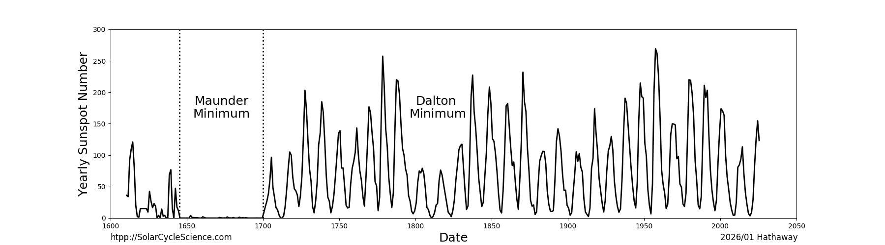
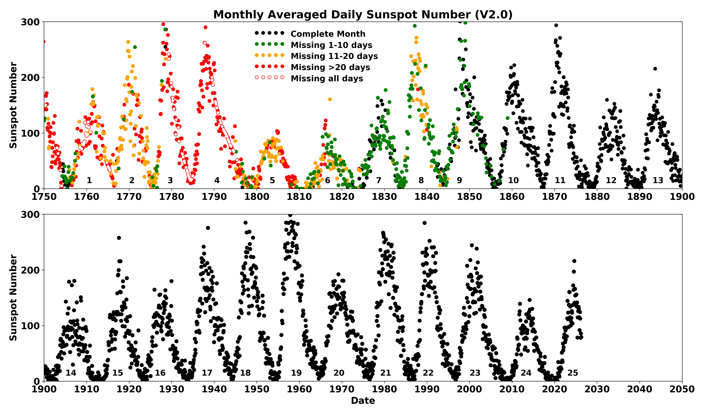
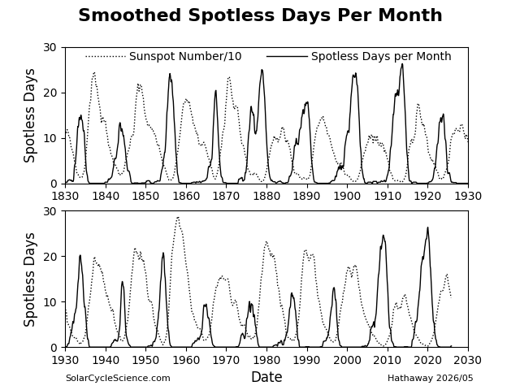
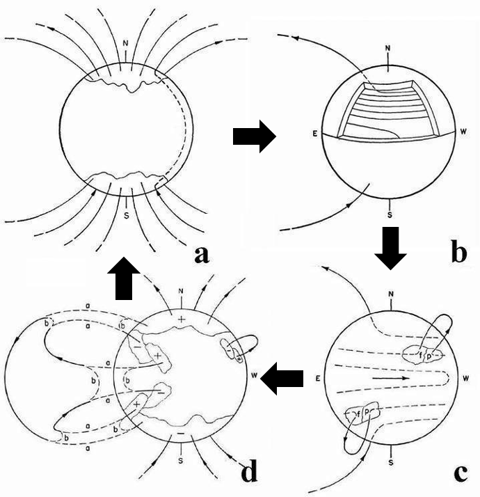

Stellar Rhythms
Solar Cycles
The Sun pulses on an average 11-year cycle, driving variations in sunspots, solar flares, and space weather events that impact Earth and our technology.
In the 19th century, astronomers realized that sunspot counts rise and fall cyclically. It is now known that other dynamic features — including coronal loops, filaments, and coronal mass ejections (CMEs) — vary in sync with sunspots.
The amplitude of each cycle varies substantially. While an average cycle peaks at about 150 sunspots, historical extremes exist. During the Maunder Minimum (1645–1715), solar activity became so weak that sunspots virtually disappeared for decades.

Historical amplitude: Yearly average sunspot numbers (V2.0) since 1600. Note the prolonged spotless era of the Maunder Minimum.

Monthly averages: Monthly averaged sunspot numbers since 1750. Colors indicate missing days in the record, with black representing complete months.

Spotless Days: Smoothed days per month with zero sunspots. Peak spotless periods match cycle minima.
Butterfly Diagrams
Butterfly diagrams illustrate how sunspots and magnetic fields emerge and migrate in latitude over time.
Sunspots emerge in bands on either side of the equator. At the start of a cycle, active regions emerge at higher latitudes (around 30°). as the cycle progresses, new spots emerge closer to the equator — a pattern known as Spörer's Law.
Opposite polarities are swept to the poles by surface flows, reversing the polar magnetic fields near cycle maxima.
Database Links

Sunspot Latitude Migration: Latitudinal distribution of sunspots since 1874.

Magnetic Butterfly Diagram: Radial magnetic field averaged over longitude showing poleward flux transport.
The Babcock-Leighton Dynamo
H.W. Babcock proposed a phenomenological dynamo model in 1961 to explain the observed magnetic behavior of the solar cycle.
- Poloidal Minimum At solar minimum, the Sun features an Axisymmetric dipole (poloidal) field. Field lines loop from pole to pole through the solar interior.
- Toroidal Stretching Because the equator rotates faster than the poles (differential rotation), submerged field lines stretch and wrap longitudinally, strengthening the field.
- Flux Emergence Stretched magnetic tubes become buoyant, emerging through the surface to create sunspot pairs with characteristic Joy's tilt and Hale polarity.
- Polar Reversal Leading spots cancel across the equator, while surface flows sweep trailing polarities poleward, neutralizing and reversing the polar field.

The Babcock Dynamo Model: Schematic illustrating the wrapping of magnetic fields (poloidal to toroidal) and subsequent polarity reversals.